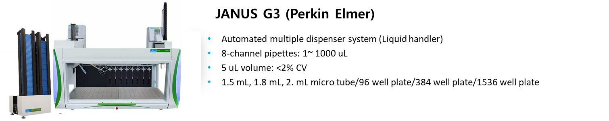
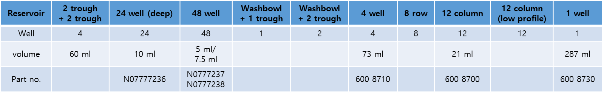

2 JANUS
2.1 장비소개
revvity (구 perkin elmer)사의 8-channel pipettes을 이용하는 liquid handler
Unit process: Liquid transfer - enzyme, mastermix, cell spotting, etc.
다양한 labware의 사용이 가능하여 자유도가 높은 liquid handler 입니다.
Automatic stacker가 부착되어 있어 최대 10 rack의 tip 사용이 가능합니다.

2.2 메뉴얼 파일 위치
share:\19_Equipment_장비_user’s_guide
2.3 사용법
2.3.1 Labware list
▶ 목록 외 labware 사용 시 ’Labware setting’을 통해 추가 가능함
- 1 Well Plate
- 108 well plate
- 1536 well plate
- 384 well plate
- 96 well plate
- Big well plate
- BioTx
- Drug Transport (Caco-2) Plates
- Microfuge (1.8 ml/2.0 ml)
- Vials
2.3.1.1 Labware: Reservoirs
▶ Reagent 분주 시 reaction 수에 따라 적정 용량의 reservoir 를 사용하면 protocol 시간을 단축할 수 있습니다.
|
Reserovir |
trough |
24 well (deep) |
48 well |
Washbolwl + 1trough |
Washbowl+ 2 trough |
4 well |
8 row |
12 column |
12 column (low profile) |
1 well |
|---|---|---|---|---|---|---|---|---|---|---|
|
Well |
4 |
24 |
48 |
1 |
2 |
4 |
8 |
12 |
12 |
1 |
|
Volume (ml) |
60 |
10 |
5/7.5 |
73 |
21 |
287 |
||||
|
Part. no. |
No77777236 |
No777237 No777238 |
600 9710 |
600 8700 |
600 8730 |
